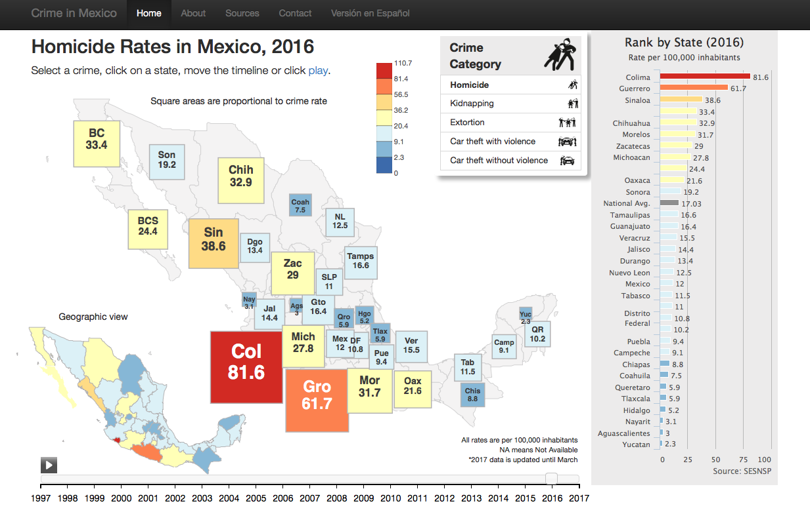
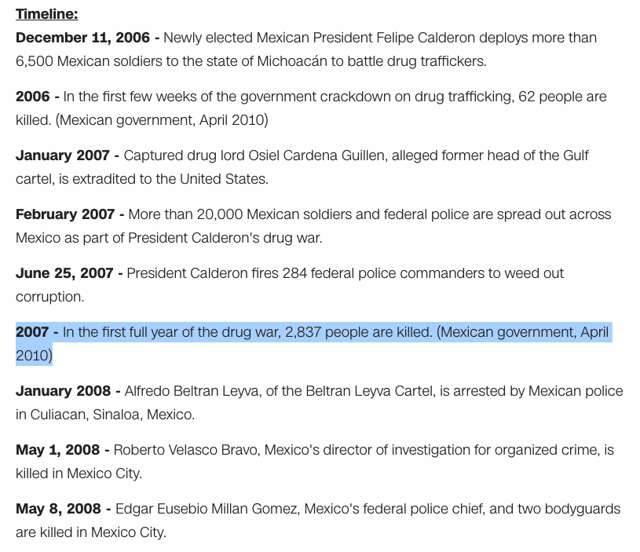
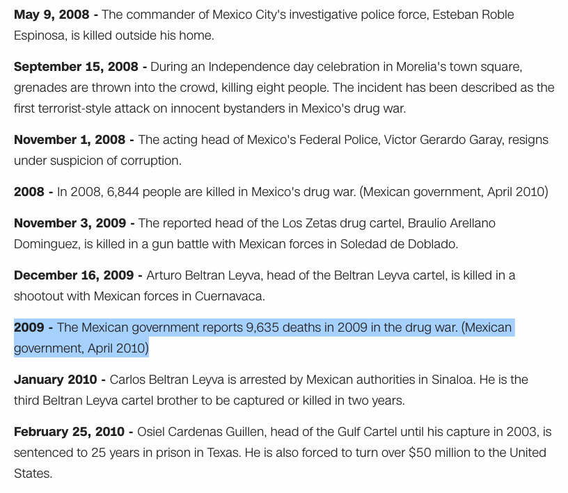
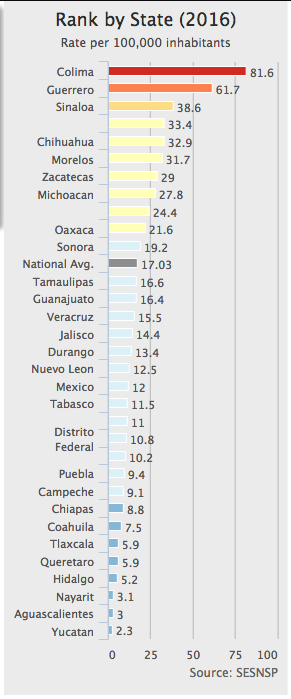
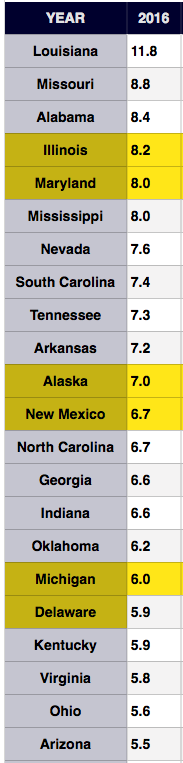
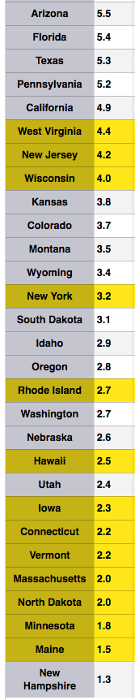
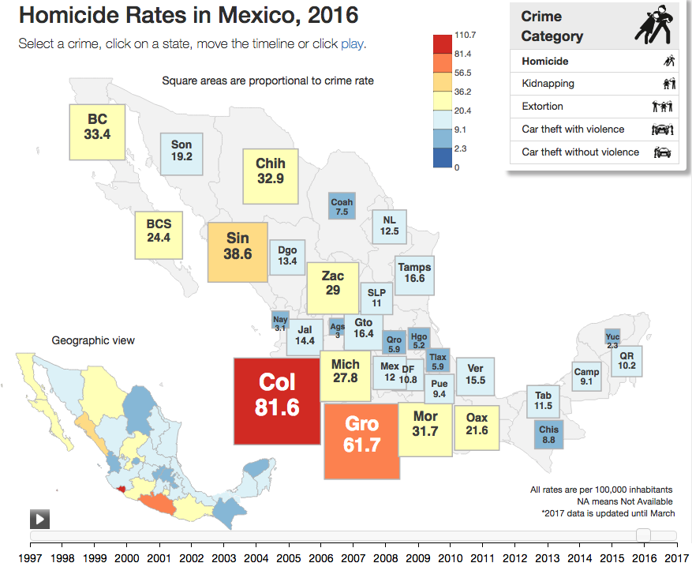
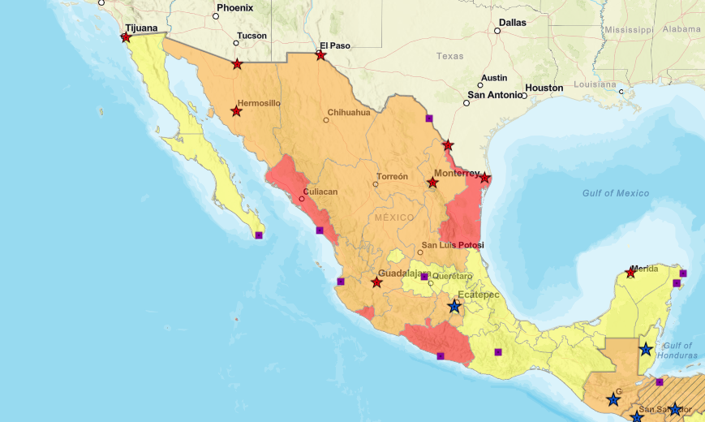

Crime in Mexico is a data visualization project that analyzes regional crime rates in Mexico.

What Happened in 2007?


Source: "Mexico Drug War Fast Facts" CNN
Should I go to Cancún? What about Acapulco?
Mexico Murder Rate by State Per 100,000 Inhabitants

U.S. Murder Rate by State Per 100,000 Inhabitants

U.S. Murder Rate by State Per 100,000 Inhabitants

The U.S. Department of State has a "Do Not Travel" warning in effect for U.S. citizens who want to travel to Colima, Guerrero, Michoacan, Sinaloa, and Tamaulipas.

Department of State Travel Advisories

Yellow - Level 2: Exercise Increased Caution - United Kingdom, Italy, India, Spain